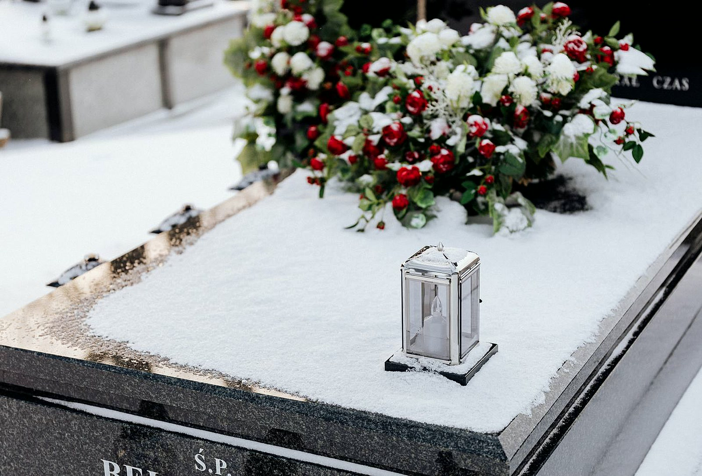
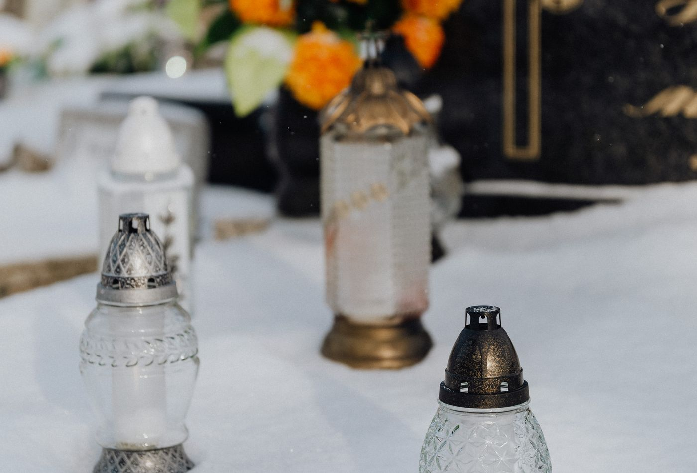

Nagrobki i kamieniarstwo
Zakład kamieniarski w Stąporkowie. Nagrobki i pomniki.
Najpierw zobaczysz projekt i pełną wycenę. Kamień zamawiamy dopiero, gdy wszystko Ci pasuje.
Własny zakład i montaż
Formalności z cmentarzem
Projekt przed decyzją
Cena rozpisana na pozycje
Granit na pokolenia

O nas
Jak pracujemy
Pracujemy w Stąporkowie i znamy tutejsze cmentarze - wiemy, gdzie grunt długo osiada i jak ustawić pomnik, żeby nie ruszył się po zimie. Większość rodzin przychodzi do nas z polecenia.
W tym fachu innej reklamy nie ma.
Poznaj nas →
Realizacje
Nagrobki i pomniki
Nagrobki pojedyncze i podwójne, płyty, lampiony i dodatki z granitu. Wykonanie i montaż na cmentarzu.


Współpraca
Zacznijmy od krótkiej rozmowy.
Odezwij się z pytaniem - odpowiemy konkretnie, nic za to nie płacisz.